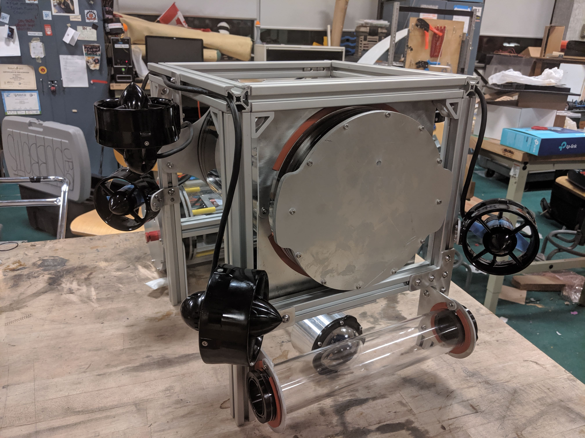

Dvir Hilu Project Portfolio
VirtioFS
As part of Professor Fedorova's research group at UBC, I worked to devise a way to allow GPUs to directly access files from a storage device over unified memory. This worked eventually turned into an undergraduate thesis.
See more
3D Scan
To learn more about and explore classical image processing techniques, I worked on a project to generate a 3D point cloud of an object from multiple images.
See more
UBC Subbots
For two years, I was the captain of UBC Subbots: a student design team at UBC making an autonomous underwater vehicle (AUV). This page details both management experience I gained, and a brief summary of my work on the acoustic localization system of the robot.
See more